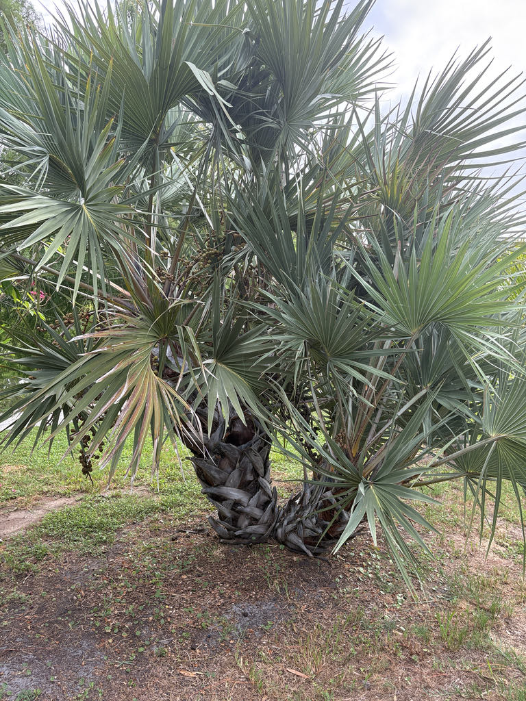

- Palms are not supposed to branch. Structurally, they are built around a single apical growing tip — lose it, and the stem is done. The Lala Palm outright defies that monocot blueprint by routinely forking right at ground level, producing a multi-stemmed, architectural clump that looks more like a prehistoric sculpture than a standard palm.
- It is the only species in its genus compact enough for an average garden, and the most frost tolerant of all the Hyphaene palms — a useful combination for growers pushing the limits of the subtropics.
- Its fruiting timeline is a masterclass in slow-motion biology. A single drupe takes two full years to ripen, then may cling stubbornly to the branch for another two years after that. A productive female becomes a living calendar — carrying up to 2,000 fruits at once, each at a different point in that four-year arc.
- The hard white seed inside the fruit is a form of vegetable ivory. Artisans across eastern and southern Africa carve it into ornaments and curios — the endosperm is dense enough to hold fine detail, though the seeds are small compared to the South American tagua nut that dominates the commercial trade.
This African beauty is native to the eastern and southern Afrotropics, ranging from Somalia in the north down through Kenya, Tanzania, Mozambique, and into KwaZulu-Natal in South Africa. It also occurs on the coastal flats of western Madagascar and on Juan de Nova Island in the Mozambique Channel — making it one of the very few palm species found on both continental Africa and Madagascar.
Within that range it occupies a wide variety of low-altitude habitats: coastal dunes and shoreline bush, open savannas, riverine margins, and areas with accessible groundwater. It is well adapted to sandy, often nutrient-poor soils, and in some areas forms extensive stands.
In Florida it is grown as an ornamental specimen, valued for its unusual clustering form, blue-green fan fronds, and tolerance of drought and brief cold. Once established, its deep roots search out underground water — making it extremely drought tolerant and well suited to Florida's dry seasons.
Specimens have been cultivated at the Montgomery Botanical Center in Miami and at Leu Gardens in Orlando.
- The genus name Hyphaene comes from the Greek hyphaino, meaning 'to weave' — a reference to the fibrous, interlaced texture of the fruit pulp. The species epithet coriacea is Latin for 'leathery,' describing the tough, coriaceous texture of the fruit skin and frond surface. Both names are quietly accurate field descriptions.
- The fruit is one of the more remarkable things about this palm. The pear-shaped drupes ripen from green through orange to a glossy reddish brown and carry a thin layer of spongy, fibrous pulp with a flavor variously described as gingery or reminiscent of gingerbread. The liquid inside the young, unripe seed is used as a drink similar to coconut milk.
- The whole cycle from fruit set to fruit fall spans up to four years.
- Across its native range, the Lala Palm supplies an impressive array of materials. Leaf fibers are harvested sustainably — traditionally only a third of each leaf is taken — then boiled, sun-dried, and woven into baskets, mats, and hats, sometimes colored with natural dyes. Sap is tapped for palm wine, the palm heart is eaten, and the ivory-hard seed is carved into ornaments.
- In parts of Mozambique, basket-weaving from Hyphaene coriacea leaves is the dominant palm-based livelihood activity.
The inflorescences attract bees, which are documented visitors to Hyphaene flowers within the genus's native range. Because this is a dioecious palm — male and female flowers on separate trees — insect movement between individuals matters for fruit set, and a flowering Lala Palm in a botanical garden setting can be a useful nectar stop.
The fruit is the real ecological engine. In Africa, elephants, baboons, and monkeys consume the pulp eagerly and disperse the large seeds over substantial distances — elephants in particular carry seeds far from the parent plant through their dung.
African palm swifts are closely associated with Hyphaene palms in their native range, nesting beneath the fronds and gluing their eggs in place with saliva to prevent falls. In Florida that specific wildlife community does not apply, but the clustered trunks and persistent leaf bases provide shelter structure for birds and small wildlife.
The Lala Palm is dioecious: male and female flowers occur on entirely separate trees. Only female individuals set fruit, and only when a pollen-producing male is nearby. Propagation is by seed, which requires high temperatures to germinate and produces a vigorous taproot early in development.
The palm also forks from the base — most individuals split into two or more stems at or near ground level before a trunk has fully formed, which is how the characteristic low, multi-stemmed clump develops.
Inflorescences are interfoliar — they emerge from between the leaf bases rather than from the crown tip. Male inflorescences are branched and carry small yellow-green flowers arranged in vertical rows along the rachillae. Female inflorescences are somewhat longer, with fewer, stouter branches and solitary flowers. Both are not especially showy.
Large, irregularly pear-shaped to top-shaped drupes roughly 2 to 3 inches in diameter, ripening from green through pale orange to glossy reddish brown. The outer shell is tough and glossy; inside is a thin layer of spongy, edible fibrous pulp surrounding a single very hard seed. Fruit takes two years to ripen and may hang on the tree for a further two years before falling.
A productive female can carry up to 2,000 fruits at once.
Costapalmate fan fronds reaching up to about 6 feet long, gray-green to blue-green in color, with a leathery texture that gives the species its Latin name. The crown typically holds 9 to 20 leaves. Fronds spread with a recurved rachis, giving the crown a slightly drooping, relaxed silhouette.
The petiole is armed with stout black triangular spines up to about half an inch long — worth noting before you reach in.
Clustering and multi-stemmed, typically forming a clump of 2 to 6 trunks. Most individuals fork at or near ground level — the stems diverge early, before a full trunk has formed, producing the palm's characteristic low, spreading base. Each trunk is 4 to 8 inches in diameter and clad in a distinctive criss-cross pattern of old, persistent leaf bases.
Higher aerial branching, as seen in some other Hyphaene species, is far less typical of this palm.
Start by looking down, not up. Right at the soil line, find the exact point where what was once a single seedling split into multiple distinct trunks — you can often see the divergence happening at or below knee height, a structural decision the palm made before it was even fully established.
Then scan upward to the petioles: those stout black triangular spines lining each leaf stalk are not incidental. They are evolutionary armor, shaped over millennia to deter the megafauna — elephants, rhinos, large browsers — that shared this palm's African homeland.
Finally, if the palm is fruiting, let the color guide you: pale green fruits are just beginning their two-year journey; deep glossy brown ones have already ripened and may have been hanging there for another year or two beyond that.
The petioles carry stout black triangular spines — reaching between the fronds is how you get scratched, so take a moment to look before you touch. The fruit pulp is a documented food in eastern and southern Africa, with a gingery flavor, but the outer shell must be broken open to reach it and the fruit here should be treated as ornamental rather than a snack.
The seed endosperm hardens into a dense ivory-like material not suited for eating. No toxicity to people or dogs is documented for any part of this palm.
The taxonomy of this species has a long history of synonym-accumulation — more than a dozen names have been applied to what is now treated as Hyphaene coriacea, including H. natalensis and H. turbinata. The current accepted name has been stable in modern treatments.
Palmpedia growers note that branching specimens — where a trunk forks above ground into two distinct stems, each with its own crown — are uncommon in cultivation but do occur, and are considered especially desirable by collectors. The Lala Palm branches far less readily than some of its genus-mates, which makes a forked individual here worth a second look.


- © Randall Carter (CC-BY-NC), via iNaturalist
- © Ruby Meador (CC-BY-NC), via iNaturalist